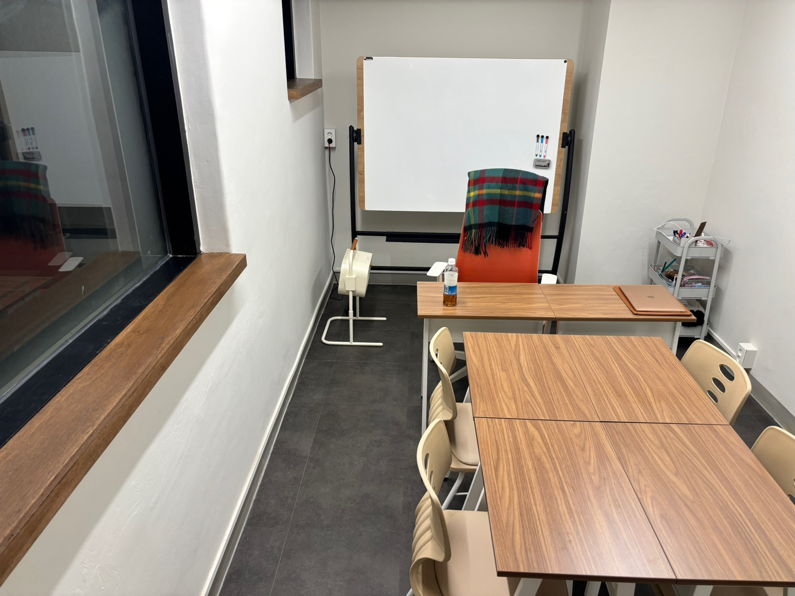

히라가나부터 시작해요
일본어 문자를 처음 배우고 짧은 표현부터 익히려는 분에게 맞습니다. 글자의 모양과 소리를 연결하고 익숙한 단어를 읽는 연습부터 차근차근 시작해 보세요.
PROGRAM / BASIC JAPANESE
문자부터 문장까지, 나의 속도에 맞춰 일본어의 기초를 쌓아갑니다.
일본어를 처음 시작하거나 배운 내용을 다시 정리하고 싶은 분을 위한 안내입니다. 읽기·듣기·말하기 가운데 익숙한 부분과 어려운 부분을 함께 살펴보세요.

01 / FOR YOU
일본어 문자를 처음 배우고 짧은 표현부터 익히려는 분에게 맞습니다. 글자의 모양과 소리를 연결하고 익숙한 단어를 읽는 연습부터 차근차근 시작해 보세요.
예전에 공부했지만 문장을 만들 때 헷갈리는 분에게 맞습니다. 기억나는 표현과 자주 막히는 부분을 구분하고 지금 필요한 기초부터 다시 살펴보세요.
학교나 업무 일정과 함께 일본어를 배우려는 분에게 맞습니다. 수업을 희망하는 요일과 생활 속에서 복습할 수 있는 시간을 함께 정리해 주세요.
02 / ONE TO ONE
관심 과정과 목표 일정, 공부할 수 있는 시간을 알려 주세요. 최근 교재와 학습 기록을 준비해 주세요.
최근 문제와 작성한 글을 함께 살펴봅니다. 익숙한 부분과 어려운 부분을 나누어 현재 위치를 정리합니다.
현재 수준과 목표에 맞춰 1:1로 준비합니다. 학습 순서와 복습할 내용을 함께 정리합니다.
이전 학습을 다시 살펴보고 다음 과제를 정리합니다. 혼자 설명할 수 있게 된 부분을 확인합니다.
새로운 표현은 짧은 문장으로 써 보고 소리 내어 말해 보세요. 자신의 생활과 연결해 정리하면 복습하기 좋습니다.
03 / CURRICULUM
히라가나와 가타카나를 읽고 소리와 연결합니다. 익숙한 단어와 짧은 표현을 통해 일본어를 읽는 감각을 익힙니다.
기초 문법을 활용해 자신의 이야기를 짧게 써 봅니다. 단어를 바꾸어 문장을 만들고 읽고 말하는 연습으로 연결합니다.
읽고 들은 내용을 자신의 말로 정리합니다. 이전에 만든 문장을 다시 보며 혼자 사용할 수 있는 표현과 더 배우고 싶은 상황을 찾습니다.
추천 시작 시기는 배우고 싶은 목적과 생활 일정을 함께 고려해 정합니다. 일본어를 처음 접한다면 관심 있는 상황과 매주 실제로 확보할 수 있는 시간을 먼저 적어 보세요.
04 / UNIVERSITIES
아래 수강 후기에서 확인되는 합격 대학입니다.
05 / REVIEWS
히라가나 정말 기초부터 쌤과 함께 했습니다!
2년 넘게 선생님한테 과외를 받았는데 부족하고 잘 안되는 일본어 부분들을 유동적으로 관리해주신 덕분에 실력 향상도 되고 입시에서 좋은 결과를 얻을 수 있었어요
06 / TUITION
강사 1:1
주 1회 · 월 4회
1회 90분
원장 직강 1:1
주 1회 · 월 4회
1회 90분
3개월 이상 등록 시 10%, 6개월 이상 등록 시 15% 할인됩니다. 자세한 내용은 상담에서 안내해 드립니다.
주 1·2·3회는 각각 월 4·8·12회 기준입니다. 위 금액은 1:1 수업 기준이며, 그룹 수강료는 1인당 금액입니다.
07 / Q&A
일본어를 처음 시작한다는 점을 알려 주세요. 배우고 싶은 이유와 관심 있는 상황, 평소 확보할 수 있는 시간을 적어 오면 출발점을 함께 정리하기 좋습니다.
사용했던 교재와 기억나는 표현을 알려 주세요. 이미 익숙한 부분을 살펴보고 문자를 읽을 때와 문장을 만들 때 각각 어려운 부분을 구분해 보세요.
성인 학습자도 현재 수준과 목표를 기준으로 상담해 주세요. 업무나 생활 일정 속에서 가능한 학습 시간을 나누어 보고, 수업 희망 요일과 복습 시간을 함께 정리해 주세요.
CONSULTATION
처음 시작하는 일본어도, 다시 꺼내 보는 일본어도 괜찮습니다. 현재 수준과 배우고 싶은 이유, 준비 가능한 일정을 알려 주세요.
신사역 8번 출구 · 도보 10분 · 발렛 주차 가능
최종 수정일: 2026.10.16